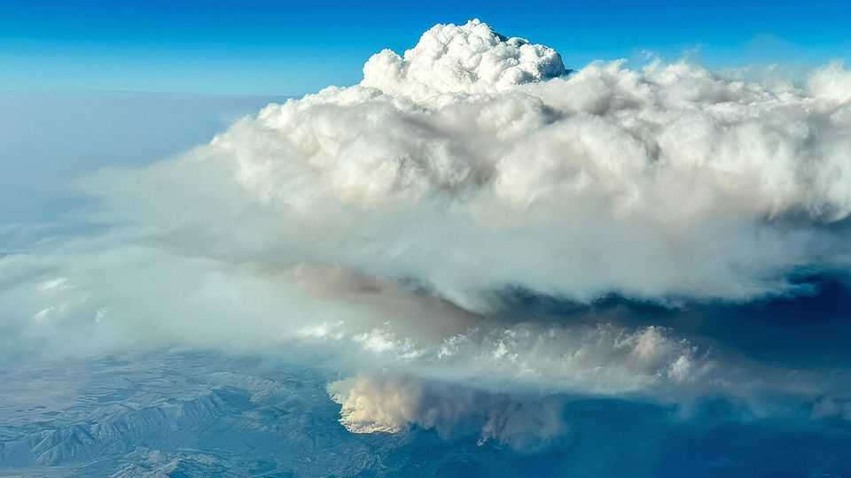

NASA takes aim at fire storms
These products of wildfires worsen their creators

Aug 13th 2026
MOST AIRCRAFT try to avoid bad weather. Not so a Gulfstream V that taxied onto the runway of Rocky Mountain Metropolitan Airport, in Colorado, on July 29th. Its flight path was set to take it directly into a rare and little-understood weather event—a pyrocumulonimbus (pyroCb)—in Oregon. Such towering, smoke-tinged storm clouds form above wildfires and generate weather that can multiply the damage of the fires that cause them.
The Gulfstream’s journey was the first flight of the INjected Smoke and PYRocumulonimbus Experiment (INSPYRE)—a joint mission between NASA, America’s aerospace agency, and that country’s Naval Research Laboratory (NRL). This project, led by David Peterson of the NRL, aims to measure pyroCbs in unprecedented detail by collecting samples and monitoring a storm’s evolution from the inside out. The resulting data, the team hopes, will help pin down any role such storms play in Earth’s warming climate, and better equip firefighters as they battle wildfires of increasing size and intensity. The summer of 2026 has brought some of the worst to date in America and Europe. In July France recorded its first ever pyroCb.
Thunderstorms happen when warm, moist air is driven rapidly upward. The air cools as it rises and its water vapour condenses, forming clouds. In the right conditions, these clouds grow into towering cumulonimbi, the roiling insides of which conjure strong winds, lightning and hail.
For pyroCbs, fire drives this process. And it supercharges it. The intense heat causes air to surge upward, carrying with it moisture released from the burning vegetation. Smoke, too, is brought along for the ride. It clogs up the clouds that form above the fire, limiting rainfall while increasing the chance of lightning. The lack of rain means little water reaches the ground, allowing the fire to spread.
PyroCbs are an indication that a wildfire has “gone berserk”, says Michael Fromm of the NRL. And the storm only amplifies the fire’s damage. The volatile conditions make it harder to contain wildfires and pose an additional threat to firefighters and civilians. PyroCbs can also ignite new fires as they discharge lightning and whip up showers of embers in ferocious, unpredictable winds.
And the destructive effects of fire-generated storms are not limited to the ground. Their great height and intense updraft means they act like chimneys, wafting smoke directly into the stratosphere. There, the plumes spread more easily (see picture) and linger for longer than at lower altitudes. Smoke particles tilt Earth’s radiative balance by absorbing sunlight, and alter stratospheric currents. Chemical reactions on these particles’ surfaces also destroy atmospheric ozone, which may affect the shield against ultraviolet light from the sun which that gas provides. At the end of 2019, during a four day wildfire outbreak in south-eastern Australia, pyroCbs injected around 1m tonnes of smoke into the lower stratosphere—an amount equivalent to a moderate volcanic eruption.
“As much as we know, we still know very little” about pyroCbs, says Dr Fromm. INSPYRE aims to change this by tackling three big unknowns. The first is the question of which fires form pyroCbs and why. The second is what determines whether a storm will inject smoke into the stratosphere and how much it will deposit there. The third is how smoke changes the stratosphere’s composition and, in turn, Earth’s radiative balance.
To do all this, Dr Peterson has assembled a team of around 150 researchers to track pyroCbs from all angles. On the ground, trucks equipped with lidar, radar and weather balloons probe a storm’s underbelly. They are joined in the air by the Gulfstream, which heads straight into the billowing clouds of the pyroCb in order to collect samples, and also by a second, purpose-built NASA plane, called an ER-2, that cruises above the storm clouds, about 10km into the stratosphere, where it can monitor the smoke plumes.
The outing on July 29th successfully brought all of these pieces together. “It worked out remarkably well,” says Dr Peterson. And he should know, for he was on the Gulfstream. The smoke, he says, meant that, as soon as the plane entered the clouds, everything went dark. Then, on August 3rd, the team collected their first sample of a smoke plume injected into the atmosphere from a second pyroCb, in Utah. They will continue to fly around three times a week until September.
The mission is well-timed. Wildfires are increasing in frequency and intensity. Though INSPYRE’s focus is on America, Europe’s own large-scale wildfire science mission, EUBURN, has been going since 2025. If better measurements can make the extreme weather that comes with wildfires more predictable for those on the ground, then even in the clouds of pyroCbs, such missions will have found a silver lining.■